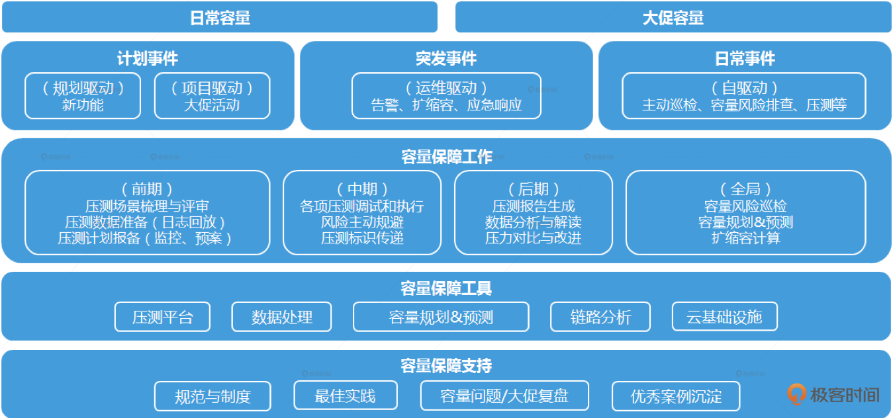

- 00 开篇词 互联网时代，人人肩负容量保障的职责.md.html
- 01 容量保障的目标：容量保障的目标是什么？该如何度量？.md.html
- 02 容量测试与验证：怎样科学实施容量测试？.md.html
- 03 容量指标分析经典5问：响应时间真的是越短越好吗？.md.html
- 04 容量治理的三板斧：扩容、限流与降级.md.html
- 05 全链路压测：系统整体容量保障的“核武器”（上）.md.html
- 06 全链路压测：系统整体容量保障的“核武器”（下）.md.html
- 07 工具进化：如何实现一个分布式压测平台.md.html
- 08 容量预测（上）：第三只眼，通过AI预测服务容量瓶颈.md.html
- 09 容量预测（下）：为不同服务“画像”，提升容量预测准确性.md.html
- 10 浅谈排队论：数学之美，通过建模计算容量.md.html
- 11 与时俱进：云原生下的容量保障新趋势.md.html
- 12 大促容量保障体系建设：怎样做好大促活动的容量保障工作（上）.md.html
- 13 大促容量保障体系建设：怎样做好大促活动的容量保障工作（下）.md.html
- 14 容量保障组织建设：容量保障需要什么样的团队？.md.html
- 15 小公司也能做好容量保障：建设经济实用型的容量保障体系.md.html
- 加餐 学习容量保障的那些经典资料.md.html
- 结束语 做时间的朋友，成功是持续累积而成的.md.html
- 捐赠
00 开篇词 互联网时代，人人肩负容量保障的职责
你好，我是吴骏龙。欢迎你和我一起学习容量保障。
如果你现在还不知道“容量保障”到底是啥意思，那也不用着急。因为，容量保障其实就在你我身边。我们在使用的各种互联网应用，比如你点外卖使用的“饿了么”“美团外卖”等等，比如你使用的各种电商App，它们的稳定运行，背后靠的都是各类技术保障工作。
而在这些技术保障工作中，最重要的就是质量保障和容量保障这两类：
- 质量保障，是确保服务功能正确，不出问题。比如，订单系统结算时，要保证金额正确。
- 容量保障，是要保证服务在大量用户访问时，依然可以正常工作。比如，在“双11”购物节的超高访问量下，各电商网站依然能够稳定地运行。
而我，先后在eBay上海研发中心和阿里巴巴本地生活（前身是“饿了么”）工作近8年的时间，做的就是质量保障和容量保障相关的工作。
在eBay工作时，我主要负责质量保障工作，在部门内建立了完善的自动化测试体系和持续集成流水线，并将机器学习引入到软件测试工作中，解决了测试报告自动分析的难题。这些成果至今仍然是互联网行业的前沿研究方向。
后来我到了阿里本地生活，当时恰逢异地多活项目落地，随之而来的是全链路压测工作的启动。作为当时团队中的平台开发Leader，我有幸参与了这项浩大的工程，并主导负责了整个全链路压测的自动化和规范化工作。这是我第一次系统接触容量保障工作的重要环节，它就像是我的孩子一样成长。直到现在，我们曾经的团队成员聚首，对此还会津津乐道。
在全链路压测走向正轨以后，我渐渐发现仅通过全链路压测是无法全面保障系统容量安全的。于是，我将工作重点从全链路压测这个专项，转向了整个容量保障的体系化建设，致力于推动高效和富有层次的容量保障实践，并带队攻克了多项容量预测难题。我自己也作为阿里本地生活的全局容量保障负责人，固守着这一片碧海蓝天。
目前，我在一家创业公司继续我的质量保障和容量保障事业，而容量保障是我深耕最多的领域，也是我投入巨大热情的地方。
那为什么我想要开设这样一门课呢？
在我的职业生涯中，能够非常深刻地感受到，容量保障对于一家互联网公司的重要性，因为几乎每时每刻我都在回答这些问题：我负责的软件系统目前运行的很好，但是公司业务增长迅猛，如果访问量增加2倍，系统还能支撑吗？如果无法支撑2倍的访问量，哪些服务会首先成为瓶颈？这些服务如果采取扩容措施，需要扩容多少量？大规模促销活动场景下，容量风险如何识别和预防？
与此同时，随着互联网应用复杂度和系统架构复杂度的不断增加，容量保障涉及的工作越来越多，随之而来的误区和困惑也越来越多。
我在多个场合进行容量保障分享时，也经常被问及这样的问题：
- 我们一直在做性能测试，为啥服务容量还是老出问题？
- 容量保障，有没有套路可循？
- 我们公司规模不大，没有专人去做容量保障，有没有成本低点的办法？
- 我公司规模不大，业务也没有什么大促场景，需要做容量保障吗？
别着急，这个专栏我们就是来解决上面的问题。我写这个专栏的最大初衷，也是希望把我在容量保障领域的经验，总结成方法论分享给你，帮助构建一个全局视角，使你不仅知道容量保障该怎么做，还能深入理解为什么要这样做。
在互联网行业飞速发展的今天，除非我们的系统有非常固定的用户规模和长期不变的业务逻辑，否则，容量保障应当是每个互联网公司都需要广泛关注的工作。无论你是性能测试人员、研发人员、架构师、运维人员，或是现在流行的DevOps或SRE人员，都应当具备容量保障技能，重视容量保障工作。
看到这里，你是否会有困惑，性能测试、压测、扩容……这些词就代表容量保障吗？容量保障到底是什么呢？在这里，我就给你下个定义吧。
到底什么是容量保障
我们拆开来看，容量保障=容量+保障。
容量是什么？容量是一个在生活中很常见的概念，我们喝水的杯子就有容量，我们每天上班搭载的地铁也有容量。广义的容量可以定义为：容器能够承载物质的量。杯子就是容器，水就是物质，杯子能够装多少水就是容量。
而从互联网技术视角出发，我们可以将软件系统或服务视为容器，流量或业务量视为物质，那么就可以得到互联网软件系统容量的概念，即“单位时间内软件系统能够承载的最大业务量”。
而容量保障，就是用各种方法保证软件系统的容量充足，预防容量隐患的重要工作。
容量保障对于系统稳定性至关重要，如果一辆货车核载80吨，而我们塞进了100吨的货物，后果可想而知。互联网历史上多家大厂也曾发生过多次因容量问题引发的线上事故，比如某年春晚某头部电商的摇一摇红包活动短暂宕机，微博在娱乐圈出现热门事件时的频繁宕机，都对用户造成了巨大影响。以至于网友纷纷调侃，衡量明星火不火，就看微博是否为他/她宕机过。
容量保障难不难？
也许你会问，既然容量就是系统能承载的业务量，那我多加点服务器不就行了吗？但我要告诉你，容量保障不是这么简单的，否则就不会有上面那么多困惑了。
互联网场景下的容量保障工作是一项系统性工程，它的难点主要体现在以下几个方面。
1. 容量的不确定性： 一辆货车在交付时已经标注了核载重量，而互联网服务的容量受服务器资源、架构设计、网络传输状况和业务场景等多种条件制约，会呈现出不同的容量表现，很难得到确定解。
2. 容量评估的复杂性： 随着微服务架构的日益盛行，服务链路变得越来越复杂，任何一个环节出现容量瓶颈都有可能放大到整条链路，这给容量评估工作带来了难度。
3. 容量测试的不准确性： 容量测试的场景需要尽可能逼近真实情况，还需要保证被测服务的环境（服务资源、规模、配置等）与真实环境对等，但实际上受制于各种原因，我们很难做到完全仿真，因此容量测量的准确性也是一个挑战。
此外，容量保障还会牵扯到成本管理的问题，这也是一个难点。因为工程师主要面对的是技术问题，更关注技术层面的目标，而公司的管理层则倾向于将项目成果和业务需求作为核心目标。在实际业务发展过程中，尤其是在业务进攻期，系统所需资源比如：服务器、内存、硬盘、网络带宽等，它们的成本很容易被工程师们忽略，或者在很晚才被考虑。
从全局来看，如果前期对研发资源成本缺乏规划，等到业务发展到了一定规模，拿到机器账单的时候，惊呼“机器怎么这么费钱”，再想立即降低成本，可能已经错过了最佳时机，因为技术改造本身是一个相对长期的过程。很多公司的成本管理意识可能就如下图所示，是不健康的。
因此，容量规划是容量保障的一个核心环节和难点，不仅要保证服务能够承载相应的流量，还要确保以尽可能少的资源来承载这些流量；更进一步的，在当今开源节流的大背景下，我们还希望以尽可能低的人力成本，保障容量安全。
说了那么多难点，那么如何将它们变得不难呢？这就是我的这个专栏希望带给你的价值。
课程是如何设计的
在这次的专栏中，我将从技术视角出发构建一个容量保障体系化的大图，覆盖容量保障工作的方方面面，逐个击破，尽可能全面地展现容量保障各项技术的全貌。具体来说，会有以下三个部分。
- 基础篇： 我将以容量保障工作的时间轴为主线，分别就目标、测量、分析、治理这几大工作展开，积累容量保障的通用方法，帮助你完成基础入门。
- 进阶篇： 我将分几个独立专项话题，对容量保障工作中的一些前沿技术进行深入剖析，包括全链路压测、分布式压测平台的研发工作，以及AI预测容量、云原生下的容量保障新趋势等。这其中部分话题在业界甚至是第一次公开，非常值得学习。
- 案例篇： 从案例场景出发，介绍双11大促场景下的容量保障工作如何做好，及小公司如何建立容量保障体系，并对容量保障组织建设给出我的建议。
在这里，我先为你总结一套较为适合互联网场景的容量保障方法论，如下图所示。先从“日常容量”和“大促容量”的目标出发，拆分出三个入口，分别对应计划事件（事先能够预知的新功能或大促活动）、突发事件（事先无法预知的紧急事件）和日常事件（常态化的容量表现）。再自上而下拆解出具体的策略（工作项、工具、规范、案例等），每一项策略再做具体细分，形成一个有机的整体。

在接下来的讲解中，我会再对这个方法论体系中的核心环节进行详细描述，帮助你更好地理解和落地。当然，这套方法论未必适合所有的场景和业务形态，但我认为，即便是在一个全新的领域，它也可以帮助你在最短的时间内，建立一套有效的容量保障体系。更重要的是，它提供了一种核心的思维方式。
最后，我想跟你分享一句我很喜欢的名言，来自列宁：“我们不需要死读硬记，我们需要用基本的知识来发展和增进每个学习者的思考力”。希望这个专栏能够引发你的思考，助你早日成为一名容量保障的“尖兵”。
© 2019 - 2023 Liangliang Lee. Powered by gin and hexo-theme-book.